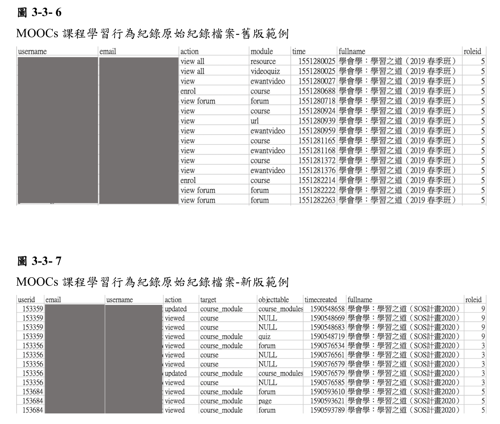
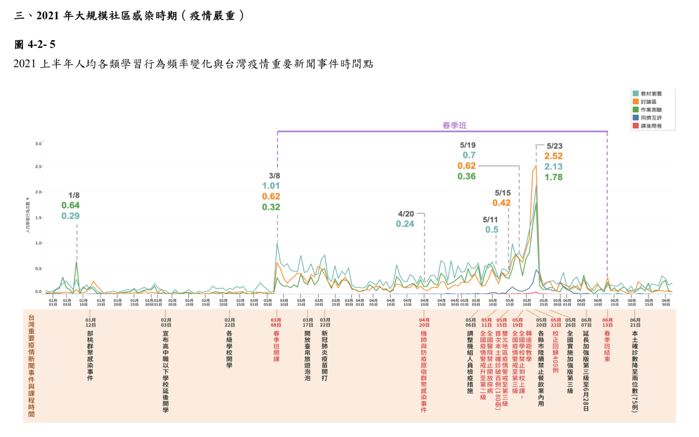
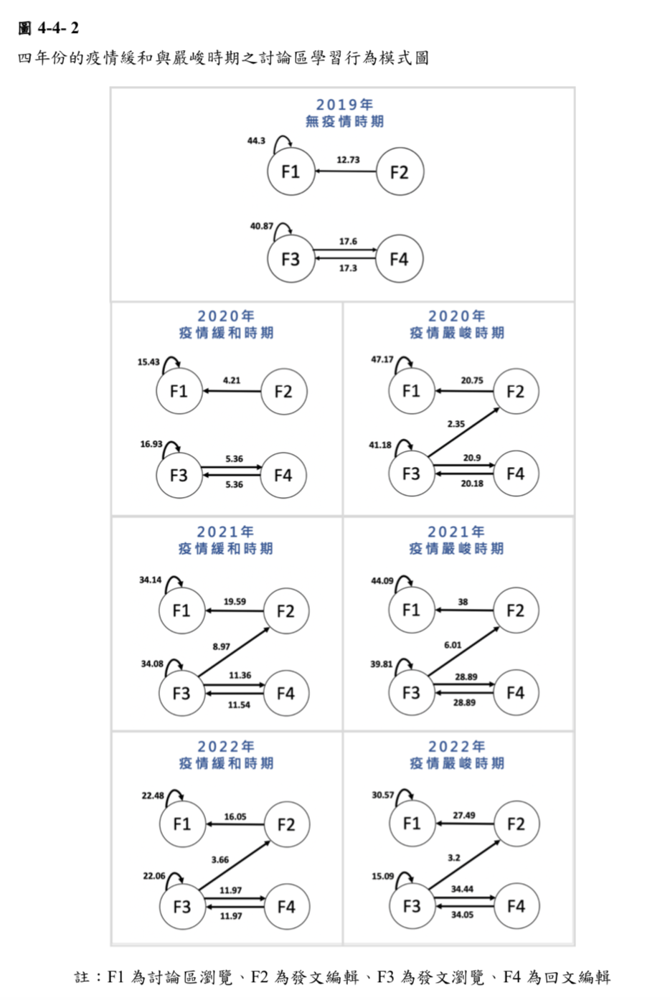

<!DOCTYPE html>
<html lang="zh-tw"><head>
  <meta charset="utf-8">
  <title>Yi-Ning&#39;s Blog Website</title>

  <!-- mobile responsive meta -->
  <meta name="viewport" content="width=device-width, initial-scale=1, maximum-scale=1">
  <meta name="description" content="我的研究所碩士論文研究 記錄">
  <meta name="author" content="Yi-Ning">
    
  
  <meta name="theme-name" content="liva-hugo" />
  
  <meta name="generator" content="Hugo 0.127.0">

  <!-- plugins -->
  
  <link rel="stylesheet" href="https://kity40720921.github.io/plugins/bootstrap/bootstrap.min.css ">
  
  <link rel="stylesheet" href="https://kity40720921.github.io/plugins/slick/slick.css ">
  
  <link rel="stylesheet" href="https://kity40720921.github.io/plugins/themify-icons/themify-icons.css ">
  
  <link rel="stylesheet" href="https://kity40720921.github.io/plugins/venobox/venobox.css ">
  
  <link rel="stylesheet" href="https://cdnjs.cloudflare.com/ajax/libs/font-awesome/4.7.0/css/font-awesome.min.css ">
  

  <!-- Main Stylesheet -->
  
  <link rel="stylesheet" href="https://kity40720921.github.io/scss/style.min.css" media="screen">

  <!--Favicon-->
  <link rel="shortcut icon" href="https://kity40720921.github.io/images/favicon.png " type="image/x-icon">
  <link rel="icon" href="https://kity40720921.github.io/images/favicon.png " type="image/x-icon">

  <!-- google analitycs -->
  <script>
    (function (i, s, o, g, r, a, m) {
      i['GoogleAnalyticsObject'] = r;
      i[r] = i[r] || function () {
        (i[r].q = i[r].q || []).push(arguments)
      }, i[r].l = 1 * new Date();
      a = s.createElement(o),
        m = s.getElementsByTagName(o)[0];
      a.async = 1;
      a.src = g;
      m.parentNode.insertBefore(a, m)
    })(window, document, 'script', '//www.google-analytics.com/analytics.js', 'ga');
    ga('create', 'Your ID', 'auto');
    ga('send', 'pageview');
  </script>

</head>
<body>
<!-- preloader start -->
<div class="preloader">
  
</div>
<!-- preloader end -->
<!-- navigation -->
<header class="navigation" style="background-color: #895159;">
  <div class="container">
    
    <nav class="navbar navbar-expand-lg navbar-white bg-transparent border-bottom pl-0">
      <a class="navbar-brand mobile-view" href="https://kity40720921.github.io/"></a>
      <button class="navbar-toggler border-0" type="button" data-toggle="collapse" data-target="#navigation">
        <i class="ti-menu"></i>
      </button>

      <div class="collapse navbar-collapse text-center" id="navigation">
        <div class="desktop-view">
          <ul class="navbar-nav mr-auto">
            
            <li class="nav-item">
              <a class="nav-link" href="#"><i class="fa fa-behance"></i></a>
            </li>
            
            <li class="nav-item">
              <a class="nav-link" href="https://github.com/kity40720921"><i class="ti-github"></i></a>
            </li>
            
            <li class="nav-item">
              <a class="nav-link" href="www.linkedin.com/in/%e5%ae%9c%e5%af%a7-%e6%b4%aa-2bb9122b8"><i class="ti-linkedin"></i></a>
            </li>
            
          </ul>
        </div>

        <a class="navbar-brand mx-auto desktop-view" href="https://kity40720921.github.io/"></a>

        <ul class="navbar-nav">
          
          
          <li class="nav-item">
            <a class="nav-link" href="https://kity40720921.github.io/">Home</a>
          </li>
          
          
          
          <li class="nav-item">
            <a class="nav-link" href="https://kity40720921.github.io/about/">About</a>
          </li>
          
          
        </ul>

        
        
        
        

        
      </div>
    </nav>
  </div>
</header>
<!-- /navigation -->

<section class="section-sm">
  <div class="container">
    <div class="row">
      <div class="col-lg-8 mx-auto">
        
        <a href="/categories/data-analysis"
          class="text-primary">Data analysis</a>
        
        <a href="/categories/%e7%a0%94%e7%a9%b6%e6%89%80"
          class="text-primary">研究所</a>
        
        <h2>碩士論文研究</h2>
        <div class="mb-3 post-meta">
          <span>By Yi-Ning</span>
          
          <span class="border-bottom border-primary px-2 mx-1"></span>
          <span>01 January 2024</span>
          
        </div>
        
        
        
        <div class="content mb-5">
          <h4 id="做研究寫論文真的是漫漫長路呀">做研究寫論文真的是漫漫長路呀</h4>
<h4 id="respect-所有努力熬夜苦拚的研究生-">Respect 所有努力熬夜苦拚的研究生 ✨</h4>
<!-- raw HTML omitted -->
<hr>
<h6 id="我的碩士論文標題為以學習分析探索新聞媒體形塑社會氛圍與-moocs-學習意願及意圖的關係">我的碩士論文標題為：以學習分析探索新聞媒體形塑社會氛圍與 MOOCs 學習意願及意圖的關係</h6>
<p>標題很長，論文也寫的很長（笑）<br>
主要是研究 <strong>疫情之下的社會氛圍</strong>對於<strong>大規模開放線上課程的學習者</strong>是否有產生<strong>意圖</strong>與<strong>行為</strong> 的影響<br>
人類行為研究是長期被探討的內容，人類行為的原因、動機、影響因素和後果，對於許多學科領域都有重大意義。<br>
最直直直接的就是社會學、人類學、醫學、心理學，而像是經濟、行銷、管理也是需要研究人類的行為的，例如了解消費者的行為模式、偏好、決策過程等，進行有效的產品開發、營銷策略制定。<br>
只要與人有相關，就需要對行為探究一番。<br>
教育領域固然也是，明白學習者的行為動機與模式後，隨之調整教學策略、活動，才能有效的使學習者達到目標。</p>
<p>影響行為的因素眾多，「環境」又是一大因素。<br>
環境涵蓋很廣，自然、人文、生活等皆是。<br>
最日常的例子，環境中的氣溫很高，容易讓人心浮氣躁，進而心理狀態不佳，使人們難以專注學習。<br>
抑或是整個社會對於年輕人的期許，也都會或多或少影響學生的職業志向。<br>
身心靈、目標志向、實際表現</p>
<p>（我的論文就參考了《社會認知理論》與《媒體系統依賴理論》）<br>
（首次嘗試接觸傳播學的理論，在圖書館翻閱覺得很新奇）</p>
<hr>
<h4 id="那環境是否也會對線上學習行為產生影響呢">那，環境是否也會對線上學習行為產生影響呢？</h4>
<p>這正是我的研究所探討的方向。</p>
<p>這篇文章只能大概介紹一下，因為後續應該是要投稿至期刊XDD</p>
<!-- raw HTML omitted -->
<p>基於上述簡單的概要，我們蒐集了 2019 - 2023 年 四年份同一門線上課程的使用者記錄檔以及網路上的新聞內容，藉此分析這四年份
的社會氛圍有何差異，以及這樣不同的社會氛圍之下對於線上學習者行為是否產生變化。</p>
<hr>
<h4 id="繁瑣的資料清洗是不可避免的">繁瑣的資料清洗是不可避免的</h4>
<p>研究方法確定後，分析就很迅速了<br>
花最多時間的就是資料清洗了（汗</p>
<p>本研究使用的資料主要是2019 - 2023 年 四年份同一門線上課程的使用者記錄檔，<br>
其他資料還有 課程活動時間、學習者名單、網路新聞&hellip;，<br>
格式種類很多，得先釐清不同檔案每筆資料的意思為何，清楚後才能規劃哪些資料要留下、哪些資料是不需要的、資料又要整理成什麼樣子才能跑分析等等，進而也要思考如何才能將資料改造成我所要的模樣。<br>
Excel可以很方便的處理數據，但四年份的資料真的是滿龐大的，Excel跑不太動，所以還是得依靠資料庫SQL或是Python處理較為合適。</p>
<p>為了理解資料和取得資料，打擾工程師不少次，反覆溝通，真的是很不好意思與十分感謝！<br>
我主要是用SQL來清洗資料，如果跑不動或是用SQL比較難辦到，才會考慮用Python（畢竟我還是比較熟悉SQL，而且如果簡易的SQL可以解決那固然是最好的XDD）</p>
<p></p>
<p>如上圖是學習者的行為記錄檔案，資料剛好有碰到平台改版的問題，所以舊版與新版的資料格式不同，就必須先處理這部份，重新編碼調整格式，讓四年份的資料呈現一致性。</p>
<hr>
<h4 id="獲得資料後下一步--先來看看整體趨勢吧">獲得資料後，下一步？ &gt; 先來看看整體趨勢吧！</h4>
<p>資料很多很雜，單單盯著每一筆資料是難以發現其中的特色的，<br>
若直接跑統計分析，沒有清楚資料的分布、輪廓和背景，也很難解釋最終的顯著與不顯著是為什麼，<br>
所以，先將數據視覺化吧！看看這四年整體的資料是否真的看起來有不同，<br>
而我們要做的事是探索式資料分析（Exploratory Data Analysis,簡稱EDA），對資料進行初步的調查和總結，以增進對資料的理解和獲得洞見。<br>
「得先看起來有再做才比較有可能和信心吧！」<br>
「至於怎麼視覺化&hellip;啊最近Tableau很紅耶你知道嗎？去用用看吧！」<br>
這兩句指導教授給我的爽朗回覆，我印象深刻XDD<br>
就這樣，我就跑去研究一下Tableau了XDDD</p>
<p>
Tableau圖片如上圖所示，僅放2021上半年供參考。</p>
<p>我先根據課程平台的功能區域，將各種操作行為分成五大類：教材瀏覽、討論區互動、作業測驗、同儕互評、問卷調查。<br>
而後將每年行為類別的總次數除以每年總使用者，算出人均行為次數，以折線圖來呈現。<br>
對應我所蒐集到的網路新聞事件，去探討人均行為次數是否看似有受到疫情新聞事件影響。</p>
<p>其實這個過程滿考驗細心與動腦的，我花了不少時間盯著四年份的趨勢圖看，互相比對，記錄所發現的現象。<br>
首先從大模樣、整體走勢來觀看，再慢慢地逐一對照不同新聞事件的趨勢波動（什麼樣的事件，造成嚴重的漲幅）。<br>
統整幾個發現的要點，再進一步與教授討論。<br>
像是我發現了<strong>原先沒有疫情的時候(2019年)，學習者在課程初期的人均次數都會比較高。而自從疫情出現後，變成學期末的人均次數比較高。</strong>，也發現了<strong>自從疫情出現後，討論區的人均行為次數有很明顯的成長</strong>。</p>
<!-- raw HTML omitted -->
<p>(插入圖片)</p>
<p>為了更加確定這些發現不是只有所看到的數據漲幅那樣，<br>
我們再將不同年份的五類行為進行卡方獨立性檢定，去查看行為比例之間是否真的有差異。<br>
果然，有達到統計顯著水準，更加硬證了不同的疫情社會氛圍有促使學習者的行為產生變化。</p>
<!-- raw HTML omitted -->
<hr>
<h4 id="再來我們要來細細探查行為模式了">再來，我們要來細細探查行為模式了！</h4>
<p>稍微統整一下上面的過程<br>
我們先確定了研究方向與方法後，獲得數據資料後進行清洗，將資料整理成我們想要的模樣。<br>
而後，我們先進行了探索式資料分析，掌握資料的趨勢、分布、型態，確立我們的研究方向、研究假設是可能可行的。<br>
再來，我們進行卡方獨立性檢定，以檢驗方式更加確定逐年的行為比例確實是有差異的，尤其是討論區互動明顯逐年增加。<br>
那現在我們打算更細去探討行為「模式」的部份了！</p>
<p>我們探討的是新聞媒體所塑造的「疫情」社會氛圍，但台灣的疫情狀態很特別，大致上都是在四、五月的時候加劇，而後慢慢減緩。因此我們把每一年分成<strong>疫情嚴峻時期</strong>與<strong>疫情緩和時期</strong>兩個時段，而後進行滯後序列分析（Lag Sequential Analysis），探討五大行為類別在逐年的疫情嚴峻/緩和時期是否有行為模式的改變。<br>
結果並沒有什麼明顯的差異性，也就是說學習者在教材瀏覽、討論區互動、作業測驗、同儕互評、問卷調查，五個類別行為之間的轉換差異不大（比方說，學習者通常都是教材瀏覽操作完接著討論區互動操作，逐年沒有顯著的差異）<br>
但我們又再各個類別的細行為各自跑一次滯後序列分析，像是教材瀏覽類別的行為包含課程地圖瀏覽、影音教材瀏覽、其他教材瀏覽這三種操作行為，我們進一步詳細探討教材瀏覽這一類的行為模式是否有受到疫情嚴峻/緩和社會氛圍影響。</p>
<p></p>
<p>這邊可以提其中一項我們分析後的發現。<br>
自從2020年國內疫情首次出現之後，不論是疫情嚴峻或緩和時期，學習者的討論區互動行為模式開始出現了<strong>發文瀏覽F3到發文編輯F2</strong>的動作達到統計顯著水準。可以更加凸顯疫情的出現改變了學習者行為模式，學習者在線上有更頻繁進行討論區互動，這部份也與上述的EDA、卡方檢定結果相呼應。</p>
<!-- raw HTML omitted -->
<hr>
<h4 id="最後">最後</h4>
<p>其實我的研究還有探討課程完課率、通過率、將學習者分成興趣生和學分生再探討行為模式&hellip;等部分。<br>
但再這樣寫下去可能就變成小論文了（笑）</p>
<p>而這些數據分析結果，對於教育有何幫助呢？<br>
身為小小碩士生的我，其實也不敢說有多大的幫助，但從整體的研究結果我們可以知道<strong>社會氛圍的變化也會對線上學習行為產生影響的</strong>。如果再一次面臨疫情，除了大規模轉成遠距教學以外，我們在教學設計上可以有更多的討論區互動，從結果來看，相較於以往都是單純觀看影音教材來說，學習者會更加願意將行為轉而至討論區，或許是因為疫情長期悶在家裡，人多少還是需要有互動社交的行為。<br>
因此，我們也可以進一步思考，或許這樣的異步線上學習環境，若再次碰到疫情，是否可以有同步線上學習的活動增加？或許可以讓學習者更願意使用此平台學習。</p>
<p>其實這份研究還可以延續做很多的面向，像是我自己就滿好奇<strong>後疫情時代，2024年疫情已生活化</strong>的時期，學習者的線上學習行為模式是否又產生了不同的變化，是又變回 2019年無疫情時的原樣了呢？還是如同2023年一般，抑或是又有別的轉變？<br>
如果平台增加哪些功能/活動/工作坊，是否也有差異？課程類型的不同（像是微積分或藝術美學）是否學生的線上學習行為也會有些差異？又或是使用自然語言處理，探究學習者在討論區發文/留言的內容&hellip;等許許多多的面向。</p>
<p>現在回過頭在看看自己所做的研究，雖然沒有使用到什麼多猛的技術，但真的是「哇 原來我也是有所成長的呢！」。</p>
<p>啊 不小心打太多了<br>
附上Behance 碩士論文介紹作品連結：
<a href="https://www.behance.net/gallery/197984135/_">https://www.behance.net/gallery/197984135/_</a></p>

        </div>

        
        
      </div>
    </div>
  </div>
</section>


<footer class="text-capitalize" style="background-color:#895159;">
  <div class="container">
    <div class="row justify-content-center">
      <div class="col-12 text-center mb-5 mt-5">
        <a href="https://kity40720921.github.io/"></a>
      </div>
               
      <div class="col-lg-3 col-sm-6 mb-5">
        <h6 class="mb-4" style="color: white;">Contact Me</h6>
        <ul class="list-unstyled">
          
          <li class="mb-3"><a class="text-white" href="tel:0912-473-279"><i
                class="ti-mobile mr-3 text-primary"></i>0912-473-279</a></li>
          
                     
          <li class="mb-3 text-white"><i class="ti-location-pin mr-3 text-primary"></i>Taiwan</li>
          
                     
          <li class="mb-3"><a class="text-white" href="mailto:kity40720921@gmail.com"><i
                class="ti-email mr-3 text-primary"></i>kity40720921@gmail.com</a>
          
          </li>
        </ul>
      </div>
      
      <div class="col-lg-3 col-sm-6 mb-5">
        <h6 class="mb-4" style="color: white;">Social Contacts</h6>
        <ul class="list-unstyled">
          
          <li class="mb-3"><a class="text-white" href="#">behance</a></li>
          
          <li class="mb-3"><a class="text-white" href="https://github.com/kity40720921">github</a></li>
          
          <li class="mb-3"><a class="text-white" href="www.linkedin.com/in/%e5%ae%9c%e5%af%a7-%e6%b4%aa-2bb9122b8">linkedin</a></li>
          
        </ul>
      </div>
      <div class="col-lg-3 col-sm-6 mb-5">
        <h6 class="mb-4" style="color: white;">Categories</h6>
        <ul class="list-unstyled">
          <li class="mb-3"><a class="text-white"
              href="/categories/data-analysis/">Data analysis</a>
          </li>
          <li class="mb-3"><a class="text-white"
              href="/categories/learn/">Learn</a>
          </li>
          <li class="mb-3"><a class="text-white"
              href="/categories/ui/ux/">Ui ux</a>
          </li>
          <li class="mb-3"><a class="text-white"
              href="/categories/%e5%a4%a7%e5%ad%b8/">大學</a>
          </li>
          <li class="mb-3"><a class="text-white"
              href="/categories/%e7%a0%94%e7%a9%b6%e6%89%80/">研究所</a>
          </li>
          <li class="mb-3"><a class="text-white"
              href="/categories/%e8%b3%aa%e6%80%a7%e8%a8%aa%e8%ab%87/">質性訪談</a>
          </li>
        </ul>
      </div>
      <div class="col-lg-3 col-sm-6 mb-5">
        <h6 class="mb-4" style="color: white;">Quick Links</h6>
        <ul class="list-unstyled">
          
          <li class="mb-3"><a class="text-white" href="https://kity40720921.github.io/">Home</a></li>
          
          <li class="mb-3"><a class="text-white" href="https://kity40720921.github.io/about/">About</a></li>
          
        </ul>
      </div>
      <div class="col-12 border-top py-4 text-center" style="color: white;">
        | copyright © 2021 <a href="https://themefisher.com/hugo-themes/">Themefisher</a> All Rights Reserved |
      </div>
    </div>
  </div>
</footer>

<script>
  var indexURL = "https://kity40720921.github.io/index.json"
</script>

<!-- JS Plugins -->

<script src="https://kity40720921.github.io/plugins/jQuery/jquery.min.js"></script>

<script src="https://kity40720921.github.io/plugins/bootstrap/bootstrap.min.js"></script>

<script src="https://kity40720921.github.io/plugins/slick/slick.min.js"></script>

<script src="https://kity40720921.github.io/plugins/venobox/venobox.min.js"></script>

<script src="https://kity40720921.github.io/plugins/search/fuse.min.js"></script>

<script src="https://kity40720921.github.io/plugins/search/mark.js"></script>

<script src="https://kity40720921.github.io/plugins/search/search.js"></script>

<!-- Main Script -->

<script src="https://kity40720921.github.io/js/script.min.js"></script>


<script src="https://cdnjs.cloudflare.com/ajax/libs/js-cookie/2.2.1/js.cookie.min.js"></script>
<div id="js-cookie-box" class="cookie-box cookie-box-hide">
	This site uses cookies. By continuing to use this website, you agree to their use. <span id="js-cookie-button" class="btn btn-sm btn-primary ml-2">I Accept</span>
</div>
<script>
	(function ($) {
		const cookieBox = document.getElementById('js-cookie-box');
		const cookieButton = document.getElementById('js-cookie-button');
		if (!Cookies.get('cookie-box')) {
			cookieBox.classList.remove('cookie-box-hide');
			cookieButton.onclick = function () {
				Cookies.set('cookie-box', true, {
					expires:  2 
				});
				cookieBox.classList.add('cookie-box-hide');
			};
		}
	})(jQuery);
</script>


<style>
.cookie-box {
  position: fixed;
  left: 0;
  right: 0;
  bottom: 0;
  text-align: center;
  z-index: 9999;
  padding: 1rem 2rem;
  background: rgb(71, 71, 71);
  transition: all .75s cubic-bezier(.19, 1, .22, 1);
  color: #fdfdfd;
}

.cookie-box-hide {
  display: none;
}
</style>
</body>
</html>